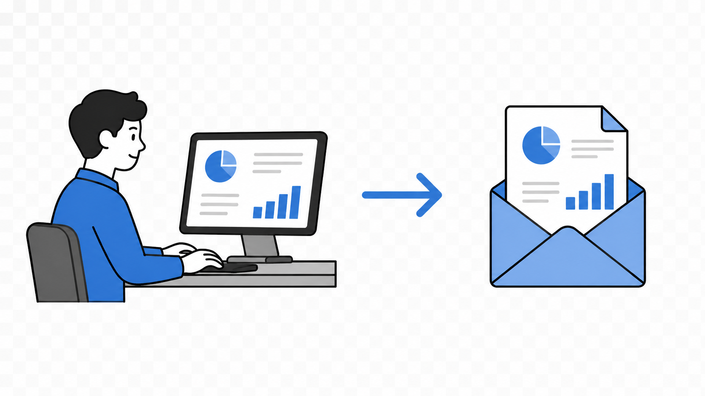

Predefined DAG
Pre-coded flow.
From Chat Q&A to Executable Analysis Loops
Agent workflow seminar
PART 01
Chat → Tool Calling → MCP → Skills
AI answers. Human operates tools.
Ask. Explain. Suggest.
IDE · shell · JADX · ADB · Frida
Paste logs back.
Goal. Target. Boundary.
Tool call + args.
Policy check. Execute. Return.
sequenceDiagram autonumber participant U as User participant A as App participant M as Model participant T as Allowed Tool U->>A: Goal + boundary A->>M: Prompt + tool schemas M-->>A: tool_call(name, args) A->>T: Execute after policy check T-->>A: Structured result / log A->>M: Tool result Note over A,M: App executes. Model interprets. M-->>A: Final answer A-->>U: Response
components · permissions · links
source hits · methods
launch · logcat
runtime traces · bridge calls
Structured result. No pasted logs.
flowchart LR Request["Task
APK + audit goal"]:::input --> Model["Model
selects tool"]:::ai Model --> Tool["Tool call
manifest_extract / jadx_search"]:::tool Tool --> Result["Structured result
JSON · log · source"]:::evidence Result --> Context["Context for next turn"]:::step Context --> Response["Evidence-backed response"]:::success classDef input fill:#0f172a,stroke:#64748b,color:#e2e8f0,stroke-width:1.6px; classDef ai fill:#1d4ed8,stroke:#bfdbfe,color:#ffffff,stroke-width:2.4px; classDef tool fill:#0f766e,stroke:#99f6e4,color:#ffffff,stroke-width:2.2px; classDef evidence fill:#422006,stroke:#fbbf24,color:#fffbeb,stroke-width:2px; classDef step fill:#111827,stroke:#60a5fa,color:#dbeafe,stroke-width:1.8px; classDef success fill:#064e3b,stroke:#5eead4,color:#ecfeff,stroke-width:2.2px;
BASIC CONCEPTS
Standard connector for AI tools
flowchart TB Model(["AI Model: tool-call decision"]):::model --> Host["Host App: context + policy"]:::host Host --> C1["IDE / Coding Client"]:::client Host --> C2["Mobile Audit Harness"]:::client Host --> C3["Reverse Engineering UI"]:::client C1 --> S1[["Repo / Manifest Server"]]:::server C2 --> S2[["JADX / APK Server"]]:::server C2 --> S3[["Frida / Device Server"]]:::server C3 --> S4[["Ghidra / IDA Server"]]:::server S1 --> Cap["Tools / Resources / Findings"]:::cap S2 --> Cap S3 --> Cap S4 --> Cap classDef model fill:#1d4ed8,stroke:#bfdbfe,color:#ffffff,stroke-width:2.6px; classDef host fill:#0f172a,stroke:#60a5fa,color:#dbeafe,stroke-width:2px; classDef client fill:#164e63,stroke:#67e8f9,color:#ecfeff,stroke-width:2px; classDef server fill:#0f766e,stroke:#99f6e4,color:#ffffff,stroke-width:2.4px; classDef cap fill:#052e2b,stroke:#5eead4,color:#ecfeff,stroke-width:2px;

manifest → source → risk
parser · jadx · adb · Frida
package · device · FP criteria
risk · evidence · command
Prompt → Skill
BASIC CONCEPTS
Reusable routine over tools
my-skill/ ├── SKILL.md # metadata + instructions ├── scripts/ # optional executable code ├── references/ # policies, API specs, checklists └── assets/ # templates, examples, static files
Action primitive
Standard connector
Routine package
flowchart TB
Catalog["name + description"]:::catalog --> Match{"task matches?"}:::decision
Match -->|no| Skip["do not load"]:::muted
Match -->|yes| Skill["read SKILL.md"]:::skill
Skill --> Refs["references/"]:::file
Skill --> Scripts["scripts/"]:::file
Skill --> Assets["assets/"]:::file
Skill --> Tools["use tools / MCP / shell"]:::tool
Tools --> Evidence["evidence report"]:::success
classDef catalog fill:#0f172a,stroke:#67e8f9,color:#ecfeff,stroke-width:2px;
classDef decision fill:#422006,stroke:#fbbf24,color:#fffbeb,stroke-width:2px;
classDef muted fill:#1f2937,stroke:#64748b,color:#cbd5e1,stroke-width:1.5px;
classDef skill fill:#0f766e,stroke:#99f6e4,color:#ffffff,stroke-width:2.5px;
classDef file fill:#111827,stroke:#60a5fa,color:#dbeafe,stroke-width:1.8px;
classDef tool fill:#1e3a8a,stroke:#93c5fd,color:#eff6ff,stroke-width:2px;
classDef success fill:#064e3b,stroke:#5eead4,color:#ecfeff,stroke-width:2px;
--- name: android-open-components description: Use when auditing exported Android components, deep links, and missing permissions. --- Goal: Find externally reachable Android components. Inputs: merged-manifest.json, jadx source map, references/android-component-policy.md Procedure: 1. Parse manifest into structured component records. 2. Join each component with source and permission context. 3. Ask the model to judge risk, not to rediscover facts. Output: component table, evidence, risk, validation command.
Executable capability
Standard connection
Reusable routine
Execution loop
PART 02
From reusable tools to execution loops
flowchart TB Task["User task"]:::input --> Skill["Skill
procedure · schema"]:::skill Skill --> Plan((Plan)):::core Plan --> Act((Act)):::core Tools[["MCP tools
read · rg · adb · frida"]]:::tool --> Act Act --> Evidence["Tool result / evidence"]:::evidence Evidence --> Observe((Observe)):::core Observe -->|failed| Revise((Revise)):::warn Revise --> Plan Observe -->|verified| Done["Evidence report"]:::success classDef input fill:#0f172a,stroke:#64748b,color:#e2e8f0,stroke-width:1.5px; classDef skill fill:#0f766e,stroke:#99f6e4,color:#ffffff,stroke-width:2.4px; classDef tool fill:#164e63,stroke:#67e8f9,color:#ecfeff,stroke-width:2px; classDef evidence fill:#422006,stroke:#fbbf24,color:#fffbeb,stroke-width:2px; classDef core fill:#1e3a8a,stroke:#93c5fd,color:#eff6ff,stroke-width:2.4px; classDef warn fill:#78350f,stroke:#fbbf24,color:#fffbeb,stroke-width:2px; classDef success fill:#064e3b,stroke:#5eead4,color:#ecfeff,stroke-width:2px;
flowchart TB Model["Model"]:::core --> Agent["Agent loop"]:::agent Context["Android app context"]:::input --> Agent Tools["MCP tools / Shell / ADB / Frida"]:::tool --> Agent Skill["Skill procedure"]:::skill --> Agent Verify["Verification evidence"]:::verify --> Agent Agent --> Work["Executable analysis loop"]:::success classDef input fill:#0f172a,stroke:#64748b,color:#e2e8f0,stroke-width:1.5px; classDef core fill:#1d4ed8,stroke:#bfdbfe,color:#ffffff,stroke-width:2.4px; classDef tool fill:#0f766e,stroke:#99f6e4,color:#ffffff,stroke-width:2px; classDef skill fill:#164e63,stroke:#67e8f9,color:#ecfeff,stroke-width:2px; classDef verify fill:#422006,stroke:#fbbf24,color:#fffbeb,stroke-width:2px; classDef agent fill:#881337,stroke:#fda4af,color:#fff1f2,stroke-width:2.4px; classDef success fill:#064e3b,stroke:#5eead4,color:#ecfeff,stroke-width:2px;
LLM chooses the next call.
Pre-coded flow.
Runtime choice.
Model controls runtime decisions.

Image: humanlayer/12-factor-agents
Tool sprawl. Context overload. Goal drift.
Ambiguous next call.
Accumulated error.
Constraints compete.
Local step beats goal.
Local judgment. Explicit orchestration.

Image: humanlayer/12-factor-agents
One bounded judgment per agent.
One target.
Only local tools.
Focused facts.
Schema result.
Done / retry / stop.


Finding: LoginDeepLinkActivity is exported by intent-filter. Evidence: - merged-manifest.json: exported=true - AndroidManifest.xml: intent-filter VIEW/BROWSABLE - source: reads token from deep link parameter Risk: - external app can trigger login flow Residual risk: - dynamic validation on device is still required
PART 03
Higher accuracy. Smaller token budget.
Prompt guard vs runtime block.
Instruction reduces risk.
Allowlist. Scope. Log. Stop.
flowchart TB Work["Human audit task"]:::input --> Spec["Audit spec"]:::core Spec --> Harness["Harness
deterministic collection"]:::tool Harness --> AI["AI judgment
analysis · PoC · diagnosis"]:::loop AI --> Evidence["Evidence report"]:::success Evidence --> Human["Human follow-up"]:::human Spec --> Guard[Tool and device policy]:::guard Guard --> Harness classDef input fill:#0f172a,stroke:#64748b,color:#e2e8f0,stroke-width:1.5px; classDef core fill:#0f766e,stroke:#99f6e4,color:#ffffff,stroke-width:2.5px; classDef tool fill:#111827,stroke:#5eead4,color:#ccfbf1,stroke-width:1.8px; classDef loop fill:#1d4ed8,stroke:#bfdbfe,color:#ffffff,stroke-width:2.4px; classDef guard fill:#422006,stroke:#fbbf24,color:#fffbeb,stroke-width:2px; classDef human fill:#111827,stroke:#94a3b8,color:#f8fafc,stroke-width:1.8px; classDef success fill:#064e3b,stroke:#5eead4,color:#ecfeff,stroke-width:2px;
Miss risk. Latency. Cost.
Facts first. Judgment second.
flowchart TB
Verify{Verification result}:::decision
Verify -->|pass| Done[Done: report evidence]:::success
Verify -->|known failure| Revise[Revise within scope]:::step
Verify -->|unclear| Ask[Ask user to choose]:::ask
Verify -->|budget exceeded| Stop[Stop with findings]:::stop
Revise --> Verify
classDef decision fill:#422006,stroke:#fbbf24,color:#fffbeb,stroke-width:2.2px;
classDef step fill:#111827,stroke:#60a5fa,color:#dbeafe,stroke-width:1.8px;
classDef ask fill:#164e63,stroke:#67e8f9,color:#ecfeff,stroke-width:2px;
classDef stop fill:#3f1d1d,stroke:#fca5a5,color:#fee2e2,stroke-width:2px;
classDef success fill:#064e3b,stroke:#5eead4,color:#ecfeff,stroke-width:2px;
No target. No scope. No validation.
Pick audit category early.
Request: WebView vulnerability review Harness plan: 1. Candidates: JS bridge / file access / mixed content / allowlist 2. Static: Manifest + WebView settings + bridge hits 3. Dynamic: ADB launch + Frida trace 4. Tools: jadx / adb / Frida 5. Exit: evidence or caveat
PART 04
Reproducible APK artifacts.

Path / policy memory errors.
JSON/XML facts.
flowchart TB Task["Audit task"]:::input --> Harness["API Harness"]:::core Harness --> Model["LLM
plan next tool"]:::model Model --> Tools["Safe tools
rg · read_file · lookup"]:::tool Tools --> Ledger["Evidence ledger"]:::evidence Ledger --> Model Model --> Final["Strict schema output"]:::final Final --> Validate["Local validation
path · line · evidence"]:::success classDef input fill:#0f172a,stroke:#64748b,color:#e2e8f0,stroke-width:1.5px; classDef core fill:#881337,stroke:#fda4af,color:#fff1f2,stroke-width:2.5px; classDef model fill:#1d4ed8,stroke:#bfdbfe,color:#ffffff,stroke-width:2.2px; classDef tool fill:#111827,stroke:#fca5a5,color:#fee2e2,stroke-width:1.8px; classDef evidence fill:#422006,stroke:#fbbf24,color:#fffbeb,stroke-width:2px; classDef final fill:#312e81,stroke:#c4b5fd,color:#ffffff,stroke-width:2px; classDef success fill:#064e3b,stroke:#5eead4,color:#ecfeff,stroke-width:2px;
launch · deeplink · logcat
hook · trace · observe
console · marker URL
entrypoint · JNI flow
Predefined validation functions.

Automation · Triage · Decision
BACKUP
BACKUP
AI-callable servers for analysis tools
jadx · apktool · aapt
adb · Frida · objection
Ghidra · IDA Pro
Tools execute, AI interprets results.
BACKUP
flowchart TD U["APK attachment
'Find issues in this app'"]:::input --> H["AI Host / MCP Client"]:::host H --> S["Static MCP tools"]:::static H --> D["Dynamic MCP tools"]:::dynamic S --> S1["apk decompile
JADX / apktool"]:::tool S --> S2["file read
manifest / source / config"]:::tool S --> S3["static tests
Semgrep / rules / parser"]:::tool S --> S4["Ghidra
native library analysis"]:::tool D --> D1["adb install"]:::tool D --> D2["adb shell / logcat"]:::tool D --> D3["dynamic tests
intent / deeplink / WebView"]:::tool S1 --> E["Evidence bundle"]:::evidence S2 --> E S3 --> E S4 --> E D1 --> E D2 --> E D3 --> E E --> F["AI triage
candidate findings + caveats"]:::success classDef input fill:#0f172a,stroke:#67e8f9,color:#ecfeff,stroke-width:2px; classDef host fill:#1d4ed8,stroke:#bfdbfe,color:#ffffff,stroke-width:2.4px; classDef static fill:#0f766e,stroke:#99f6e4,color:#ffffff,stroke-width:2.2px; classDef dynamic fill:#312e81,stroke:#c4b5fd,color:#ffffff,stroke-width:2.2px; classDef tool fill:#111827,stroke:#60a5fa,color:#dbeafe,stroke-width:1.8px; classDef evidence fill:#422006,stroke:#fbbf24,color:#fffbeb,stroke-width:2px; classDef success fill:#064e3b,stroke:#5eead4,color:#ecfeff,stroke-width:2.2px;
BACKUP
Reusable workflow. No repeated paste.
BACKUP
repo · manifest exploration
plan · script · report
ReAct + MCP analysis
BACKUP
BACKUP
flowchart TB Work["Human work"]:::start --> Harness["Tool / Harness
collect · parse · run"]:::tool Harness --> AI["AI judgment
analysis · PoC
diagnosis"]:::step AI --> Evidence["Evidence report"]:::evidence Evidence --> Human["Human
final analysis · follow-up"]:::success classDef start fill:#1d4ed8,stroke:#bfdbfe,color:#ffffff,stroke-width:2.5px; classDef tool fill:#0f766e,stroke:#99f6e4,color:#ffffff,stroke-width:2.2px; classDef step fill:#111827,stroke:#60a5fa,color:#dbeafe,stroke-width:1.8px; classDef evidence fill:#422006,stroke:#fbbf24,color:#fffbeb,stroke-width:2px; classDef success fill:#064e3b,stroke:#5eead4,color:#ecfeff,stroke-width:2px;
BACKUP
security audit task decomposition
deterministic routine automation
Manifest, Gradle, API policy inputs
analysis · PoC · diagnosis
success · failure · ask · stop
final analysis, action, ticket, patch
BACKUP
flowchart TD S0["Scenario Review start"]:::start --> S1["current-app findings
report summary load"]:::step S1 --> S2["cross-app lookup
pkg · component · deeplink"]:::db S2 --> S3["scenario context
current + related source"]:::context S3 --> S4["Scenario Review LLM call"]:::llm S4 --> S5["attack scenario
validation plan / caveat"]:::judge S5 --> S6["scenario-review artifact storage"]:::done classDef start fill:#422006,stroke:#fbbf24,color:#fffbeb,stroke-width:2px; classDef step fill:#111827,stroke:#5eead4,color:#ccfbf1,stroke-width:1.8px; classDef db fill:#0f172a,stroke:#94a3b8,color:#f8fafc,stroke-width:1.8px; classDef context fill:#0f766e,stroke:#99f6e4,color:#ffffff,stroke-width:2px; classDef llm fill:#1d4ed8,stroke:#bfdbfe,color:#ffffff,stroke-width:2.4px; classDef judge fill:#312e81,stroke:#c4b5fd,color:#ffffff,stroke-width:2px; classDef done fill:#064e3b,stroke:#5eead4,color:#ecfeff,stroke-width:2.2px;
BACKUP
review files and scripts
minimal tools and MCP permissions
manual device / hook / report actions
retain execution evidence